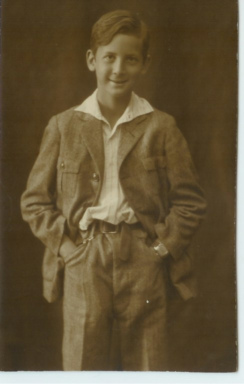

En kyrkvaktare Skåpström från Åminskog
förförde sin fru på en åmålskrog
Hon födde en slyngel
Som kristnades Bryngel
Namnet Hammar man senare på sig tog
(Limmerick författad av Birger Hammar II, se bild)